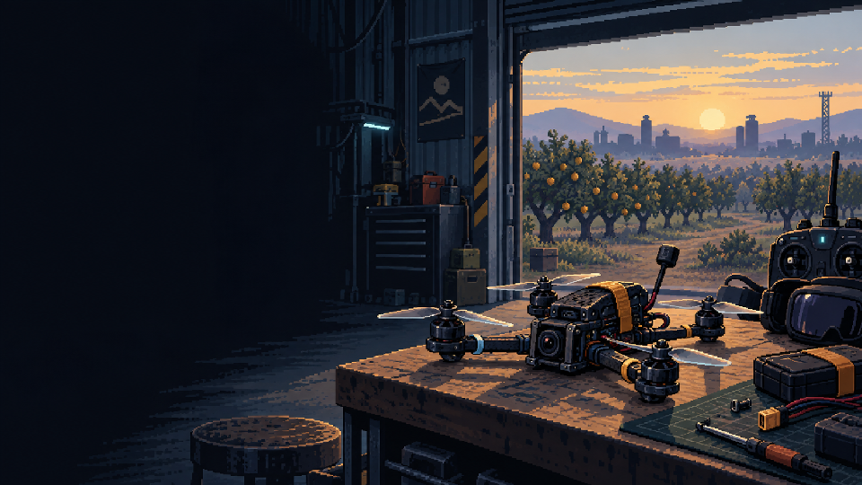
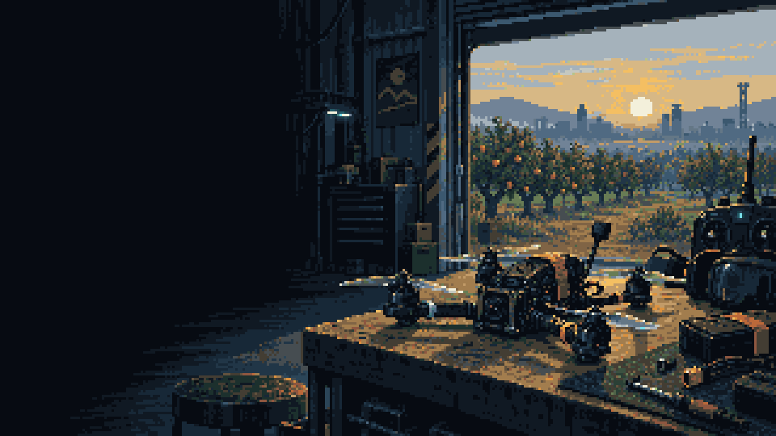
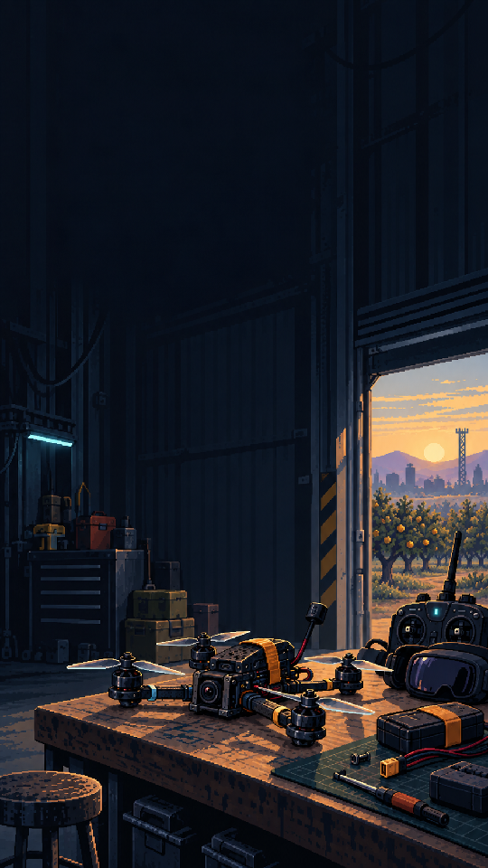
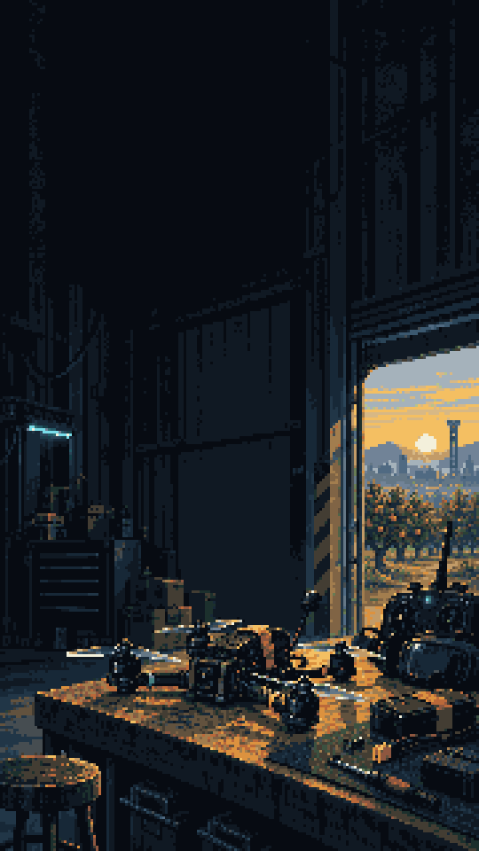

One workshop, two preparations
Source-checkout comparison. Both candidates are produced; actual-menu review and release adoption are separate. This page does not change the game.
V1 preserves finer generated texture. V2 uses the reveal family's fixed 36 colors and a 320×180 or 180×320 grid enlarged 3×. Both retain their original composition and dark menu space. Original source files and all v1 files stay unchanged.
Landscape v1 · 960×540

Landscape v2 · 960×540

Portrait v1 · 540×960

Portrait v2 · 540×960

V2 exact hashes, crops and previous output pins. Runtime compilation selects the approved revision independently; this page is a local authoring comparison.